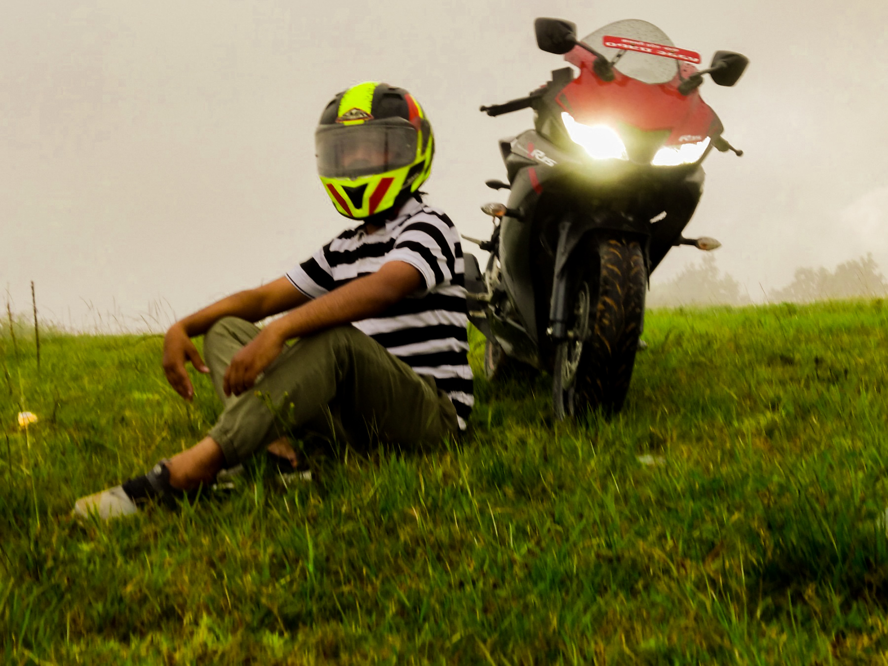
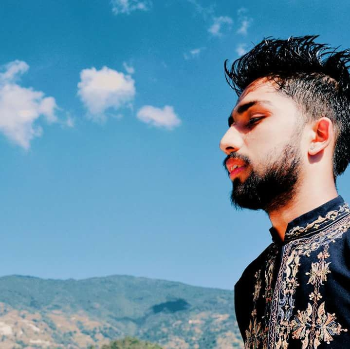
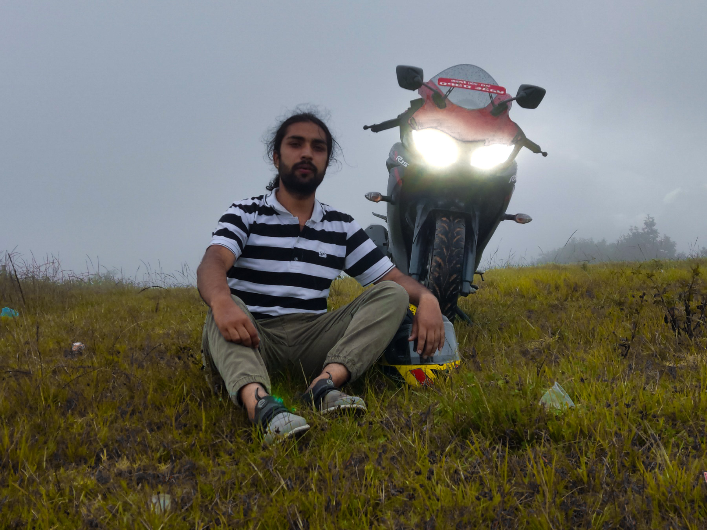

Please accept my warmest welcome to my website, I am Mr. Biwas Pudasaini. I was born and raised in
Kathmandu.
I passed my school level from Hindu Vidya Peeth Nepal. Then i choose IT as my field for further study i
join
NBPI banepa,kavre . Where i finish my Diploma level in IT . Professionally, I am a BSc(Hons) Computer
Science student. My strong dedication and education make me highly competitive in my field. Travel is
another passion of mine, along with photography. I possess a comprehensive understanding of the better
understanding of computer fields. My major is Computer Science. As, i am an IT.
At the moment, I am a detail-oriented student (BSc (Hons) Computer Science) attending Herald College. I
have consistently been praised by my professors and peers as being quality-oriented throughout my
academic career.
Hello everyone, it’s my Pleasure to introduce myself well I am Biwas Pudasaini born
and raised in Kathmandu. On Sunday, June 6 2021, I join my college after a long gap of 2 years,
Since I completed my Diploma in 2018, Not only did I moved in the long gap than most of my friends, But
I
also choose a British degree in Nepal with Herald College affiliated under University Of Wolverhampton.
I am having a great experience at the college , which no one is
sure what is happening after enrolling in a British University by being in your home country.
Vitae explicabo ea, tenetur molestias quos sint facilis ab cumque necessitatibus nihil quo saepe
perferendis. Aperiam labore molestias eos laboriosam consequuntur ad, explicabo ex facere tempora
recusandae excepturi quam vitae!
Aperiam ipsum soluta, id odio quo nobis quod asperiores nesciunt perferendis explicabo eveniet
necessitatibus voluptate exercitationem molestias eum, autem culpa accusamus iusto eos. Placeat,
nesciunt? Et esse quod veniam quae!
Cumque soluta saepe ab recusandae dolores minus enim nemo iure rerum nobis cupiditate sequi officia
iste, aliquid repudiandae voluptate accusamus aperiam esse nisi veritatis incidunt error voluptatibus.
Hobbies:
“My favourite hobby is travelling because I love discovering new cities and places around the world. I
often save up for months to plan a trip every year. I love friends’ trips and family outings but solo
travelling brings me the real adventure and thrill to venture into new places all by myself. Despite
this I like to participate in volunteer activities especially teaching underprivileged kids. I have been
associated with a few non-profit organisations since my college days and I like spending my weekends
helping these NGOs for different activities from teaching to organising interesting games and activities
to make learning fun for kids. I love playing football in my free time as it helps me unwind, relax as
well as boosts my creativity and analytical thinking skills.”
Qualification
| Institute |
level |
Grades |
| Hindu Vidya Peeth Nepal |
SLC |
80.75 % |
| Nepal Banepa Polytechnic Institute |
Diploma in IT |
60.18% |
| Herald College Kathmandu |
BSc(Hons) Computer Science |
Running.. |
Talking About My Skills
Communication Skills
Leadership Skills
Programming Skills
Good At Cycling
PhotoGrpahy
Cycling
Trekking
Love To Travel